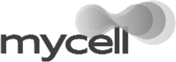

Trade Mark Journal No.2025/051 19 December 2025
WO0000001889449 (3,5)
Office of origin: Switzerland
Date of International Registration:11 September 2025
Date of designation in the UK:
11 September 2025

- Class 3
- Perfumery, essential oils, body and beauty care products, hair lotions; dentifrices; perfumes for linen; potpourris (fragrances); scented wood; antiperspirants; air fragrances.
- Class 5
- Pharmaceutical and veterinary products, as well as preparations for health care; chemical products for medical use, sanitary preparations for medical use; medical products for skin and oral care; dietetic products for medical use, dietetic food supplements, food for babies; medical teas; food supplements; chewing gum for medical use; preparations containing vitamins, minerals and/or trace elements; dietetic preparations for veterinary use; smoking cessation products; diagnostic products for medical use, test strips for diabetes and pregnancy tests, strips for cholesterol tests; dressings and bandages; bandages for medical use; wadding for medical use; sanitary articles for women, namely sanitary towels, panty liners, tampons, menstrual panties; diapers for those who are ill; adhesives for dentures, teeth filling materials and impression materials for dental use; dental mastics; pesticides and phytosanitary products; detergents for medical use; dietetic food supplements based on carbohydrates and dietary fibers; products for air purification; deodorants, other than for human beings or for animals; products for contact lenses.
Swiss PharmaCan Innovation AG
Representative: MME Legal Tax Compliance, Zollstrasse 62,, Postfach, CH-8031 Zürich, SWITZERLAND